측량및지형공간정보기사 (2021-03-07 기출문제)
1과목: 측지학 및 위성측위시스템
1. 국제 횡 메르카토르 좌표계(UTM좌표계)에 대한 설명으로 옳지 않은 것은?
- 지구를 6°경도대로 나누어 이 경도대마다 각각 투영한 도법이다.
- 극 지역에는 따로 UPS 좌표계를 사용한다.
- 왜곡 없는 투영이 가능하다.
- 중앙경선 상의 축척계수를 0.9996으로 하면, 중앙경선에서 동서로 각각 약 180km 떨어진 곳에서 축척계수가 1.0000 이 된다.
(정답률: 78%)

2. 지구의 자전축 기울기가 바뀌게 되는 현상으로 춘분점이 황도를 따라 매년 약 50″씩 서쪽으로 이동하게 되는 것은?
- 세차운동
- 장동
- 공전
- 연주운동
(정답률: 78%)
3. GNSS 측량에 대한 설명으로 옳지 않은 것은?
- 인공위성의 전파를 수신하여 위치를 결정하는 시스템이다.
- 우천시에도 위치 결정이 가능하다.
- 수신점의 높이를 결정하는데 이용될 수 있다.
- 2점이상 관측시 수신점간 시통이 되지 않으면 위치를 결정할 수 없다.
(정답률: 79%)
4. GPS 위성으로부터 전송되는 L1 신호의 주파수가 1575.42MHz 일 때 L1 신호 10000파장의 거리는? (단, 광속 c = 299792458 m/s)
- 1320.17m
- 1902.94m
- 3254.00m
- 20257.67m
(정답률: 66%)
5. GPS 오차원인 중 L1신호와 L2신호의 굴절 비율이 상이함을 이용하여 L1/L2의 선형 조합을 통해 보정이 가능한 것은?
- 전리층 지연 오차
- 위성시계오차
- GPS 안테나의 구심오차
- 다중경로오차
(정답률: 75%)
6. 평면측량에서 허용 오차를 10-6로 한다면, 반지름 몇 km 까지의 범위를 평면으로 간주할 수 있는가? (단, 지구 반지름은 6370km로 가정)
- 반지름 30km
- 반지름 11km
- 반지름 8km
- 반지름 6km
(정답률: 66%)
7. 우리나라의 직각좌표계에서 사용하고 있는 지도 투영법은?
- TM(Trasverse Mercator) 투영
- 람베르트 정각원추 투영
- 카시니 투영
- 심사 투영
(정답률: 83%)
8. GNSS 측량시 시계오차가 소거된 3차원 위치 결정을 위해 필요로 하는 최소 위성의 수?
- 4대
- 5대
- 6대
- 7대
(정답률: 84%)
9. 위성전파가 장해물로 인해 차폐되는 등의 이유로 위상측정이 중단되어 발생하는 오차를 무엇이라 하는가?
- 사이클슬립
- 대류권지연
- 시계오차
- 전리층지연
(정답률: 80%)
10. 다음 중 측지학에서 다루는 분야가 가장 거리가 먼 것은?
- 3차원 위치의 결정
- 지구의 형상과 크기
- 지구의 중력장
- 지구 내부의 물질규명
(정답률: 73%)
11. 어느 지점의 자침 편각이 W 6.5°이고 복각은 N 57° 일 때 설명으로 옳은 것은?
- 이 지점에서 진북은 자침의 N극보다 서쪽으로 6.5° 방향이다.
- 이 지점에서 진북은 자침의 N극보다 동쪽으로 6.5° 방향이다.
- 이 지점에서 자침의 N극은 수평선보다 6.5° 기운다.
- 이 지점에서 자침의 S극은 수평선보다 6.5° 기운다.
(정답률: 66%)
12. 구면삼각형 ABC의 3각을 관측한 결과 ∠A = 50° 10′, ∠B = 66° 35′, ∠C = 64° 15′ 이었다면 이 구면삼각형의 면적은? (단, 구의 반지름은 5m 이다.)
- 0.736m2
- 0.636m2
- 0.536m2
- 0.436m2
(정답률: 54%)
13. 직교하는 세 개의 축 방향에 대한 길이로 공간상의 한 점의 좌표를 결정하는 좌표계는?
- 3차원 사교 좌표계
- 3차원 직교 좌표계
- 2차원 직교 좌표계
- 2차원 사교 좌표계
(정답률: 85%)
14. 지자기측량에서 필요한 보정이 아닌 것은?
- 지자기장의 일변화 및 기계오차 보정
- 태양 고도각 보정
- 기준점 보정
- 온도 보정
(정답률: 49%)
15. 중력의 영년변화(secular variation) 원인과 거리가 먼 것은?
- 대기 물질의 변화
- 만유인력상수의 변동
- 지구의 형상과 질량의 변화
- 지구 전체적인 질량분포인 일반적인 변동
(정답률: 59%)
16. GPS 신호에 포함되어 있지 않은 것은?
- C/A 코드
- P 코드
- 방송궤도력
- 정밀궤도력
(정답률: 60%)
17. DGPS 측위에 대한 설명 중 틀린 것은?
- 위치를 알고 있는 기지점과 위치를 모르는 미지점에서 동시에 관측한다.
- 동시에 수신 가능한 위성이 최소한 4개 필요하다.
- 기지점과 미지점의 거리가 길수록 측위정확도가 높다.
- 기지점과 미지점에서의 오차가 유사할 것이라는 가정을 이용한다.
(정답률: 84%)
18. 측지학에서 사용되는 “1 Gal”과 같은 것은?
- 1 kg·m/s2
- 1 kg·cm/s2
- 1 cm/s2
- 1 m/s2
(정답률: 68%)
19. GNSS 측량에 대한 설명으로 옳지 않은 것은?
- GNSS는 위치를 알고 있는 위성에서 발사한 전파를 수신하여 소요시간을 관측함으로써 미지점의 위치를 구하는 인공위성을 이용한 범지구 위치결정체계이다.
- GNSS의 구성은 우주부문, 제어부문, 사용자부문으로 나눌 수 있다.
- GNSS에서 정밀도 저하율(DOP)의 수치가 클수록 정확하다.
- GNSS에 이용되는 좌표체계는 WGS 84를 이용하고 있으며 WGS 84의 원점은 지구질량중심이다.
(정답률: 81%)
20. 다음 중 위치기반서비스(LBS)를 위한 실시간 위치결정과 거리가 먼 것은?
- GPS
- GLONASS
- GALILEO
- LANDSAT
(정답률: 77%)
2과목: 응용측량
21. 하천의 유속측정을 위하여 표면부지를 수면에 띄우고 A점을 출발하여 B점을 퉁과하는데 소요되는 시간은 1분 20초이고 두 점 사이의 거리가 20.5m 일 때 유속은? (단, 하천에 대한 보정계수는 0.9임)
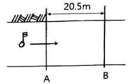
- 0.11 m/s
- 0.13 m/s
- 0.23 m/s
- 0.26 m/s
(정답률: 42%)
22. 곡선 시점까지의 추가거리가 550m이고 중심말뚝 간격이 20m, 교각이 60°, 곡선반지름이 200m 일 때 종단현의 편각은?
- 2° 47′ 04″
- 2° 51′ 53″
- 2° 55′ ⑤″
- 2° 59′ 55″
(정답률: 28%)
23. 지하시설물 측량에 관한 설명으로 옳지 않은 것은?
- 지표면상에 노출된 지하시설물은 측량하지 않는다.
- 지하시설물의 위치, 깊이, 서로 떨어진 거리 등을 측량한다.
- 지하시설물에 대한 탐사간격은 20m 이하로 한다.
- 지하시설물이란 상·하수도, 가스, 통신 등을 위해 지하에 매설된 시설물을 의미한다.
(정답률: 65%)
24. 수위표에 관한 설명으로 옳지 않은 것은?
- 수위표의 영점은 갈수위 이하까지 표시하고 상단은 평수위보다 조금 높게 측정할 수 있도록 한다.
- 수위표의 영점 표고는 그 관측소의 수준기표로부터 측정하고 수준기표의 표고는 부근의 국가수준점에 결부시킨다.
- 수위표에는 원칙적으로 5cm 단위의 눈금을 붙인다.
- 하구 부근이나 이수, 치수의 중요한 점, 또는 관측하기 불편한 곳에는 자기수위표를 설치한다.
(정답률: 43%)
25. 실제의 면적 4km2인 토지가 지형도에서 면적 25cm2 로 표시되었다면 지형도의 축척은?
- 1 : 4000
- 1 : 16000
- 1 : 25000
- 1 : 40000
(정답률: 38%)
26. 클로소이드의 공식으로 옳지 않은 것은? (단, R : 곡선반지름, L : 곡선길이, A : 매개변수, τ : 접선각)
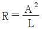
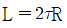
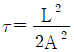
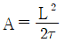
(정답률: 50%)
27. 깊이 100m, 지름 5m 인 수직터널에서 터널 내외를 연결하는데 가장 적합한 방법은?
- 계선법
- 삼각구분법
- pole과 지거에 의한 방법
- 트랜싯과 수선에 의한 방법
(정답률: 60%)
28. 단곡선 설치시 곡선반지름 R=350m, 교각 I=70° 일 때 접선길이(T.L.)는?
- 235.7m
- 245.1m
- 250.7m
- 265.1m
(정답률: 59%)
29. 하나의 터널을 완성하기 위해서는 계획, 설계, 시공 등의 작업과정을 거쳐야 하는데 다음 중 터널 외 기준점 설치 후 터널의 시공과정 중에 이루어지는 측량은?
- 터널 내 측량
- 터널 외 기준점 측량
- 세부측량
- 지형측량
(정답률: 49%)
30. 단곡선 설치 시 그림과 같이 교각(I) 관측이 어려워 ∠AA′B′, ∠BB′A′을 측정한 값이 140° 40′ 과 98° 20′ 이었다면 교각(I)은?
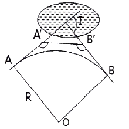
- 60°
- 90°
- 120°
- 150°
(정답률: 55%)
31. 그림과 같이 터널 단면의 좌표(x, y)를 측정하였을 때 이 좌표에 의한 터널의 내공단면적은? (단, 단위 : m)
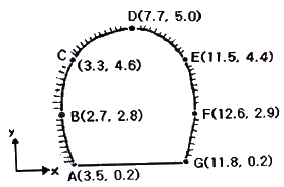
- 41.12 m2
- 45.25 m2
- 82.23 m2
- 90.50 m2
(정답률: 33%)
32. 종단곡선을 설치하기 위하여 상향기울기
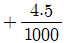
와 하향기울기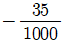
가 반지름 2000m 의 원곡선 중에서 만날 경우에 곡선시점에서 20m 떨어져 있는 지점의 종거 y 값은?- 0.1m
- 0.4m
- 0.6m
- 1.0m
(정답률: 29%)
33. 그림과 같은 지역에서 절토량과 성토량이 균형을 이루는 표고는? (단, 각 격자의 크기는 동일하다.)
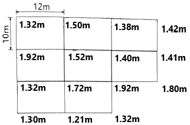
- 1468.8m
- 1468.0m
- 1.53m
- 1.50m
(정답률: 32%)
34. 노선측량의 순서로 옳은 것은?
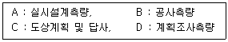
- B → C → D → A
- C → B → D → A
- C → D → A → B
- D → A → B → C
(정답률: 73%)
35. 수심이 H인 하천에서 수면으로부터 0.2H, 0.4H, 0.6H, 0.8H의 지점의 유속이 각각 0.58m/s, 0.57m/s, 0.51m/s, 0.36m/s 였다면 3점법에 의한 평균 유속은?
- 0.45m/s
- 0.49m/s
- 0.50m/s
- 0.52m/s
(정답률: 50%)
36. 하천측량에 있어서 심천측량을 실시하는 단계는?
- 평면측량
- 종단측량
- 횡단측량
- 골조측량
(정답률: 44%)
37. 지하시설물의 관측방법으로 원래는 누수를 찾기 위한 기술로 PVC 또는 플라스틱 관 등과 같은 비금속 수도관로를 찾는데 주로 이용되는 방법은?
- 전자(electronic) 탐사법
- 자기(magnetic) 탐사법
- 음파(acoustic) 탐사법
- 탄성파(seismic) 탐사법
(정답률: 54%)
38. 100m2 정사각형 토지의 면적을 0.2m2 까지 정확하기 구하기 위해서는 1변의 길이를 최대 몇 cm 까지 정확하게 관측하여야 하는가?
- 0.5cm
- 1.0cm
- 1.5cm
- 2.0cm
(정답률: 34%)
39. 토량계산에 있어 양단면의 차가 심할 때 산출된 토량의 일반적인 대소 관계로 옳은 것은? (단, 양단면 평균법을 A, 중앙단면법을 B, 각주공식을 C로 한다.)
- A ＞ B ＞ C
- A ＞ C = B
- A = C ＞ B
- A ＞ C ＞ B
(정답률: 54%)
40. 지상 및 지하시설물 등에 대한 지도 및 도면 등 제반 정보를 수치 입력하여 효율적으로 운영 관리하는 종합적인 관리체계를 무엇이라 하는가?
- AM(Automated Mapping)
- FM(Facilities Management)
- CAD(Computer Aided Design)
- SIS(Surveying Information System)
(정답률: 64%)
3과목: 사진측량 및 원격탐사
41. 절대표정(absolute orientation)에 최소 기준점의 구성으로 옳은 것은?
- 2점의 (x, y, z)좌표 및 1점의 (z)좌표
- 2점의 (x, y)좌표 및 1점의 (z)좌표
- 2점의 (x, y, z)좌표
- 3점의 (x, y,)좌표 및 2점의 (z)좌표
(정답률: 41%)
42. 항공삼각측량에 대한 설명으로 옳은 것은?
- 직접 항공기를 이용하여 지상을 촬영하는 작업을 말한다.
- 항공사진에 포함되는 지역의 기준점을 지상에서 직접삼각측량하는 직업을 말한다.
- 도화키를 사용하여 요구하는 지역의 지형지물을 지정된 축척으로 묘사하는 실내작업을 말한다.
- 도화기 또는 좌표측정기에 의하여 항공사진상에서 측정된 구점의 모델좌표 또는 사진좌표를 지상기준점 및 GNSS/INS 외부표정요소를 기준으로 지상좌표를 전환시키는 작업을 말한다.
(정답률: 58%)
43. 사진기 검정자료(calibration cerificate)로부터 직접 얻을 수 없는 정보는?
- 초점거리
- 렌즈의 왜곡량
- 등각점
- 주점
(정답률: 39%)
44. 60%의 종중복도로 촬영된 5장의 연속된 항공사진에서 가운데(3번째) 사진에 나타나는 종접합점의 최대 개수는?
- 3점
- 6점
- 9점
- 12점
(정답률: 43%)
45. 공액조건에 대한 설명으로 옳지 않은 것은?
- 영상정합을 수행할 때 검색범위를 줄여준다.
- 공액면은 2개의 투영중심과 하나의 지상점으로 정의된다.
- 공액션은 공액면과 각각의 영상면의 교선을 의미한다.
- 하나의 지상점에 대응하는 각각의 영상에서 공액선은 항상 서로 평행하다.
(정답률: 49%)
46. 수치항공사진 또는 위성영상을 집성(mosaic)할 때 인접 부분을 이어붙인 자국이 없이 원래 한 장의 사진이었던 것처럼 부드럽고 미려하게 처리하는 작업은?
- 재배열(resampling)
- 영상 페더링(feathering)
- 정사보정(orthorectification)
- 경계정합(edge matchig)
(정답률: 57%)
47. 촬영시 사진기의 경사, 지표면의 비고를 수정하였을 뿐만 아니라 등고선이 삽입된 사진지도는?
- 중심투영 사진지도
- 정사투영 사진지도
- 조정집성 사진지도
- 약집성 사진지도
(정답률: 50%)
48. 상호표점 인자로 옳게 짝지어진 것은?
- bx, by, bz, κ, ø
- by, bz, κ, ω, ø
- bx, by, bz, λ, ø
- bx, bz, κ, λ, ø
(정답률: 59%)
49. 원격탐사를 위한 정지궤도위성의 고도는?
- 약 500km
- 약 1000km
- 약 20000km
- 약 36000km
(정답률: 33%)
50. 연직사진의 경우 사진좌표계(x, y)와 지상좌표계(X, Y)가 그림과 같이 구성되었다. 지상좌표를 사진자표계로 변환하기 위한 3차원 회전행렬로 옳은 것은?
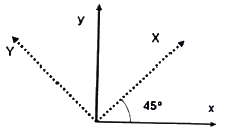
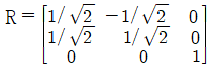
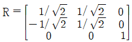
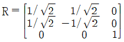
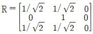
(정답률: 25%)
51. 주점거리가 160mm인 사진기로 비고 640m 지점의 대상물을 1:12000의 사진축척으로 촬영한 연직사진이 있다면 촬영고도는?
- 2360m
- 2460m
- 2560m
- 2660m
(정답률: 49%)
52. 영상을 분석하여 아래와 같은 통계값을 얻을 수 있는 수계의 트레이닝 필드로 적합한 것은?
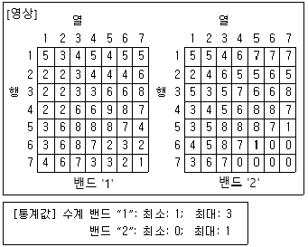
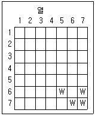
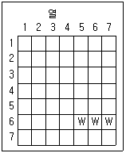
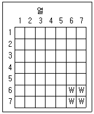
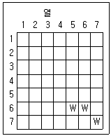
(정답률: 54%)
53. 원격탐사(remote sensing)의 정의로 가장 적합한 것은?
- 지상에서 대상물체에 전파를 발생시켜 그 반사파를 이용하여 관측하는 측량방법이다.
- 센서를 이용하여 지표의 대상물에서 반사 또는 방사되는 전자 스펙트럼을 관측하고 이들의 자료를 이용하여 대상물이나 현상에 관한 정보를 얻는 기법이다.
- 우주에 산재하여 있는 물체들의 고유 스펙트럼을 이용하여 각각의 구성성분을 지상의 레이더망으로 수집 처리하는 기법이다.
- 우주에서 찍은 중복된 사진을 이용하여 지상에서 항공사진의 처리와 같은 방법으로 판독하는 작업이다.
(정답률: 63%)
54. 사진측량에서 Z좌표(놀이)의 정확도를 높이는 방법과 거리가 먼 것은?
- 축척이 큰 사진을 사용한다.
- 사진좌표의 정확도를 높인다.
- 촬영고도가 높은 사진을 사용한다.
- 기선고도비가 큰 모델을 사용한다.
(정답률: 60%)
55. 동서 20km, 남북 10km의 장방형 지역을 촬영한 1개 모형의 피복면적이 20km2 라면 필요한 사진의 수는? (단, 안전율은 30% 이다.)
- 7장
- 10장
- 13장
- 20장
(정답률: 49%)
56. 2차원 쿼드트리(quadtree)에 대한 설명으로 옳지 않은 것은?
- 공간 자기유사상의 원리(spatial autocorrelation principle)를 이용하고 있다.
- 같은 레벨에 있는 사각형 노드는 같은 면적을 가진다.
- 인접한 자료가 멀리 저장되어 비효율적이다.
- 자료는 노드와 포인터로 저장된다.
(정답률: 55%)
57. 디지털사진측량 또는 원격탐사 자료의 처리 중 이용 가능한 영상자료의 재배열(resampling) 방법이 아닌 것은?
- 변위 내삽법(displacement interpolation)
- 최근린(nearest ineigbor) 내삽법
- 공일차 내삽법(bilinear interpolation)
- 3차 회선(cubic convolutio) 내삽법
(정답률: 46%)
58. 파장의 특정 방향성분만을 통과시키는 광학원리를 이용하여 입체시를 하는 방법은?
- 편광입체시
- 여색입체시
- 육안입체시
- 렌즈식입체시
(정답률: 70%)
59. 원격탐사에 사용되는 센서 중 수동형 센서(passive sensor)에 해당되는 것은?
- 레이저 스캐너(laser scanner)
- 다중분광스캐너(multispectral scanner)
- 레이더 고도계(rader altimeter)
- 영상 레이더(SLAR)
(정답률: 55%)
60. 평탄한 지면을 초점거리 150mm, 사진크기 23cm×23cm 로 촬영한 연직항공사진이 있다. 촬영고도 1800m, 종중복도 60%로 촬영한 경우, 연속된 10매의 사진에서 입체시 가능한 부분의 실제면적(모델면적)은?
- 27.5 km2
- 28.9 km2
- 30.5 km2
- 45.7 km2
(정답률: 24%)
4과목: 지리정보시스템
61. 수치지도에서 단일식별자(UFID : unique feature identigication)의 활용에 대한 설명으로 옳지 않은 것은?
- 구체적인 지형·지물의 변경에 관한 최선 정보를 다양한 사용자들로부터 얻을 수 있다.
- 지형·지물에 대한 최신 정보를 다른 축척의 데이터에서 제공되는 동일한 지형·지물에 바로 연계시켜 전달해 줄 수 있다.
- 사용자가 일부 처리 작업한 공간데이터를 완전히 대체시키는 것이 아니라 최신 내용만을 변경할 수 있게 해준다.
- 데이터에 대한 일관성이 높이지고 모든 변경사항의 역추적을 방지할 수 있다.
(정답률: 30%)
62. 주제도에 대한 설명으로 가장 적합한 것은?
- 다른 지도의 기반이 되는 지도이다.
- 주로 국토지리정보원에서 제작한다.
- 특정한 지리정보를 제공하기 위한 지도이다.
- 지형과 지물을 포함하여 법률로 지정된 도식과 축척에 맞추어 그린 지도이다.
(정답률: 58%)
63. 공간정보의 표현기법 중 래스터데이터(Raster data)의 특징이 아닌 것은?
- 3차원과 같은 입체적인 지도 디스플레이 표현은 불가능하다.
- 격자형의 영역에서 x, y축을 따라 일련의 셀들이 존재한다.
- 각 셀들이 속상 값을 가지므로 이들 값에 따라 셀들을 분류하거나 다양하게 표현한다.
- 인공위성에 의한 이미지, 항공영상에 의한 이미지, 스캐닝을 통해 얻어진 이미지 데이터들이다.
(정답률: 66%)
64. 래스터 자료와 비교할 때, 벡터 자료의 특징에 대한 설명으로 옳지 않은 것은?
- 자료 구조의 효율적 축약이 가능하다.
- 위상관계를 나타낼 수 있다.
- 선형자료의 연결이 매끄럽지 못하다.
- 자료구조가 복잡하다.
(정답률: 59%)
65. 지리정보시스템(GIS)에서 자료분석을 위해 지도요소를 중첩할 때 각각의 중첩되는 요소 하나하나를 무엇이라 하는가?
- 테마
- 스키마
- 레이어
- 지오코드
(정답률: 71%)
66. 지리정보시스템(GIS) 데이터베이스를 다양한 종류의 자료를 통합하여 구축할 경우에 고려하여야 할 사항으로 옳지 않은 것은?
- 자료의 표준화
- 자료의 신뢰성
- 자료의 중복성 증대
- 자료관리의 효율성 향상
(정답률: 67%)
67. 지리정보자료의 내용이나 품질, 상태, 제작시점, 제작자, 소유권자, 좌표체계 등 특성에 관한 제반사항을 나타내는 부가자료는?
- 메타데이터
- 속성데이터
- 공간데이터
- 이력데이터
(정답률: 64%)
68. 지리정보시스템(GIS)의 주요 자료원으로 거리가 먼 것은?
- 주민등록 데이터베이스
- 원격탐사 잘
- 현장 조사자료
- 수치지도
(정답률: 73%)
69. 자료의 보간법 중 최근린(nearest neighbor) 보간법에 대한 설명으로 틀린 것은?
- 자료값 중 최대값과 최소값이 손실되지 않는다.
- 다른 보간법에 비해 계산속도가 빠르다.
- 원래의 자료값을 평균하거나 변환하지 않고 그대로 이용한다.
- 가장 가까운 4개의 기지값의 거리에 따라 경중률을 계산한다.
(정답률: 42%)
70. 최근 발전하고 있는 기술 및 서비스 분야 중 지리정보시스템(GIS)과 직접적인 관련성이 가장 적은 것은?
- ITS(intelligent transport system)
- NFC(near field communicaton)
- LBS(lacation based service)
- Telematics
(정답률: 38%)
71. 지리정보시스템(GIS)의 응용기법 하나로써 공간상에 나타난 연속적인 기복의 변화를 수치적으로 표현하는 방법은?
- DXF
- FM
- DEM
- AM
(정답률: 69%)
72. 지리정보시스템(GIS) 자료를 공간자료와 속성자료로 구분할 때 공간자료에 해당되는 것은?
- 관거 재질
- 관거 매설 년도
- 관거 관리 이력
- 관거 위치
(정답률: 77%)
73. 규칙적인 셀(cell)의 격자에 의하여 형상을 묘사하는 자료구조는?
- 래스터자료구조
- 벡터자료구조
- 속성자료구조
- 필지자료구조
(정답률: 72%)
74. 다음 수계망을 Strahler방법으로 계산하면 O으로 표시되는 부분의 합류 후 하천은 몇 차수인가? (단, 물의 흐름은 화살표방향으로 흐른다.)
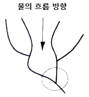
- 1차수
- 2차수
- 3차수
- 4차수
(정답률: 53%)
75. 수치표고모형(DEM) 자료를 이용하여 제작할 수 있는 산출물이 아닌 것은?
- 음영기복도
- 토지피복도
- 3차원 지세도
- 지형 경사도
(정답률: 66%)
76. 구축한 지리정보시스템(GIS) 데이터의 품질을 검사하기 위해서는 데이터를 샘플링 하여야 한다. 모집단을 보다 동질적인 몇 개의 층으로 나누고 이러한 각층으로부터 단순 무작위 표본 추출을 하는 방법은?
- 단순 무작위 샘플링(simple random sampling)
- 계통 샘플링(systematic sampling)
- 층화 계통 비정렬 샘플링(stratified systematic unalgned sampling)
- 층화 무작위 샘플링(stratified random sampling)
(정답률: 62%)
77. 위성영상의 전반에 걸쳐 불규칙한 잡음(speckle noise)이 발생하여 이를 보정하고자 할 때, 다음 중 가장 적합한 방법은?
- 밴드간 비연산처리
- 공간 필터링
- 히스토그램 확장
- 주성분 분석 변환
(정답률: 59%)
78. 위성영상의 해상도에 대한 설명으로 틀린 것은?
- 분광해상도는 스펙트럼 내에서 센스가 반응하는 특정 전자가 파장대의 수와 이 파장대의 크기를 말한다.
- 방사해상도는 동일 영상 내의 축척을 얼마나 고르게 나타낼 수 있는가를 나타낸다.
- 주기해상도는 동일 지역에 대한 영상을 얼마나 자주 얻을 수 있는가를 나타낸다.
- 공간해상도는 하나의 화소가 나타내는 최소 지상 면적을 말한다.
(정답률: 52%)
79. 지리정보시스템(GIS)의 자료구조에 대한 설명으로 틀린 것은?
- 점은 하나의 노드로 구성되어 있고, 노드의 위치는 좌표를 표현한다.
- 선은 2개의 노드와 수 개의 버텍스(vertex)로 구성되어 있고, 노드 혹은 버텍스는 체인으로 연결된다.
- 면은 하나 이상의 노드와 수 개의 버텍스로 구성되어 있고, 노드 혹은 버텍스는 체인으로 연결된다.
- TIN은 연속적인 삼각면으로 지표면을 표현하는 것으로 각 삼각면의 중앙점에서 해당 지점의 고도값을 표현한다.
(정답률: 55%)
80. 화재나 응급 시 소방차나 구급차의 운전경로 또는 항공기의 운항경로 등의 최적경로를 결정하는데 가장 적합한 공간분석방법은?
- 관망분석
- 중첩분석
- 버퍼링분석
- 근접성분석
(정답률: 59%)
5과목: 측량학
81. 그림과 같이 사력댐을 건설하고자 한다. 사력댐 상단(진한 선)의 높이가 100m 이고, 기울기는 상·하류방향 모두 1:1 이라고 할 때, 대략적인 성토범위로 가장 적절히 표시된 것은?
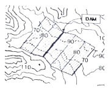
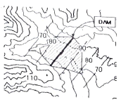
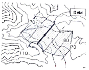
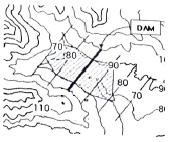
(정답률: 31%)
82.  방위각이 166° 29′ 45″ 이라면
방위각이 166° 29′ 45″ 이라면
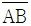
의 역방위각은?- 13° 30′ 15″
- 103° 30′ 15″
- 283° 30′ 15″
- 346° 29′ 45″
(정답률: 49%)
83. 동일 조건으로 기선측정을 하여 다음과 같은 결과를 얻었을 때 최확값은?
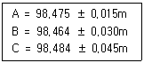
- 98.468m
- 98.474m
- 98.478m
- 98.484m
(정답률: 43%)
84. 축척 1:25000 지형도 상에서 두 점간의 도상거리가 10cm이었다. 이 두 점의 거리가 도상 25cm로 표현되는 지형도의 축척은?
- 1:50000
- 1:25000
- 1:10000
- 1:5000
(정답률: 49%)
85. 오차에 대한 설명으로 틀린 것은?
- 과대오차는 관측자의 부주의나 측량방법을 잘못 적용함으로써 나타나는 과실 또는 착오의 결과이다.
- 크기와 방향을 알 수 있는 오차를 정오차라 한다.
- 정오차는 항상 발생하는 오차로 상차라고도 한다.
- 우연오차는 발생빈도, 크기, 부호 등을 알 수 없는 무작위성 오차이다.
(정답률: 47%)
86. 조정이 복잡하고 포괄면적이 적으며 시간이 많이 요구되는 단점이 있으나 정확도가 가장 높은 삼각망은?
- 단열삼각망
- 유심삼각망
- 결합삼각망
- 사변형삼각망
(정답률: 63%)
87. 그림과 같은 수준측량에서 P점의 표고는?
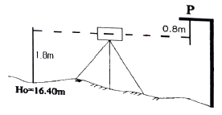
- 17.4m
- 18.0m
- 18.4m
- 19.0m
(정답률: 60%)
88. 등고선의 성질에 대한 설명으로 옳지 않은 것은?
- 등고선은 분기하지 않고 절벽이나 동굴의 지형에서는 교차할 수 있다.
- 동일 등고선 상의 모든 점은 같은 높이에 있다.
- 등고선은 하천, 호수, 계곡 등에서는 단절되고 도상에서 폐합되지 않는다.
- 등고선은 능선 또는 계곡선과 직각으로 만난다.
(정답률: 55%)
89. 그림과 같이 “사과길”로부터 은행건물의 위치를 정확히 알고자 다음과 같은 측량결과를 얻었다. CD의 거리는? (단, ∠EAB = 62°, AB = 6m, BC = 10m, ∠ABC = ∠ADC = 90°)
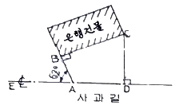
- 9.99m
- 10.23m
- 10.88m
- 11.76m
(정답률: 40%)
90. 직접수준측량으로 편도 8km를 측량하여 ±20mm의 오차가 발생하였다면, 편도 2km를 관측할 경우에 발생할 수 있는 오차는?
- ±20mm
- ±10mm
- ±5mm
- ±2.5mm
(정답률: 29%)
91. 그림과 같이 삼각측량을 실시하였다. 이때 P점의 좌표는?
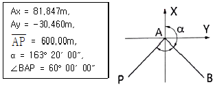
- Px = -354.577m, Py = -442.2⑤m
- Px = -466.884m, Py = -329.898m
- Px = -466.884m, Py = -442.2⑤m
- Px = -354.577m, Py = -329.898m
(정답률: 33%)
92. 트래버스 측량의 결과가 표와 같을 때, 폐합오차는?
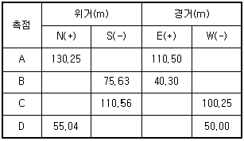
- 1.⑤m
- 1.15m
- 1.75m
- 1.95m
(정답률: 38%)
93. 전자파거리측량기(EDM)에서 발생되는 오차 중 거리에 비례하여 나타나는 것은?
- 위상차 측정오차
- 반사프리즘의 구심오차
- 반사프리즘 정수의 오차
- 변조주파수의 오차
(정답률: 45%)
94. 30m에 대하여 6mm 늘어나 있는 줄자로 정사각형의 지역을 측량한 결과 면적이 62500m2 이었다면 실제면적은?
- 62525 m2
- 62513 m2
- 62488 m2
- 62475 m2
(정답률: 43%)
95. 측량기기와 성능검사 주기가 옳게 짝지어진 것은?
- 토덜 스테이션 – 1년
- GPS 수신기 - 2년
- 거리측정기 - 3년
- 레벨 – 5년
(정답률: 55%)
96. 기본측량성과 중 지도등 또는 측량용 사진을 국토교통부장관의 허가 없이 국외로 반출할 수 있는 '대통령령으로 정해진 경우'에 해당되지 않는 것은?
- 정부를 대표하여 외국 정부와 교섭하거나 국제회의 또는 국제기구에 참석하는 자가 자료로 사용하기 위하여 반출하는 경우
- 대한민국 정부와 외국정부간에 체결된 협정 또는 합의에 의하여 상호 교환하는 경우
- 관광객의 유치와 관광시설의 선전을 목적으로 제작된 지도를 국외로 반출하는 경우
- 5만분의 1 이상의 축척으로 제작된 지도를 국외로 반출하는 경우
(정답률: 63%)
97. 고의로 측량성과를 사실과 다르게 한 자에 대한 벌칙 기준으로 옳은 것은?
- 3년 이하의 징역 또는 3000만원 이하의 벌금
- 2년 이하의 징역 또는 2000만원 이하의 벌금
- 1년 이하의 징역 또는 1000만원 이하의 벌금
- 200만원 이하의 과태료
(정답률: 57%)
98. 국토교통부장관이 수립하여야 하는 측량기본계획의 수립 주기로 옳은 것은?
- 3년
- 5년
- 7년
- 10년
(정답률: 59%)
99. 공간정보의 구축 및 관리 등에 관한 법률상 용어의 정의로 옳은 것은?
- 지번이란 작성된 지적도의 등록번호를 말한다.
- 측량성과는 측량에서 얻은 각종 기록과 최정성과를 말한다.
- 지적측량이란 토지를 지적공부에 등록하거나 지적공부에 등록된 경계점을 지상에 복원하기 위하여 필지의 경계 또는 좌표와 면적을 정하는 측량을 말한다.
- 측량이라 함은 공간상에 존재하는 일정한 점들의 위치를 측량하고 그 특성을 조사하여 도면 및 수치로 표현하거나 도면상의 위치를 현지에 재현하는 것을 말하며, 각종 건설 사업에서 요구되는 도면작성 등은 제외된다.
(정답률: 36%)
100. 공공측량시행자는 작업은 시행하기 며칠전까지 공공측량 작업계획서를 제출하여야 하는가?
- 3일
- 7일
- 15일
- 30일
(정답률: 55%)
중앙경선 상의 축척계수를 0.9996으로 하면, 중앙경선에서 동서로 각각 약 180km 떨어진 곳에서 축척계수가 1.0000 이 된다는 것은 옳은 설명이다. 이는 UTM 좌표계의 특징 중 하나로, 중앙경선에서는 축척계수가 1에 가깝게 유지되지만, 중앙경선에서 멀어질수록 왜곡이 커지게 된다.
지구를 6°경도대로 나누어 이 경도대마다 각각 투영한 도법이 UTM 좌표계이며, 극 지역에는 따로 UPS 좌표계를 사용한다는 것도 옳은 설명이다.